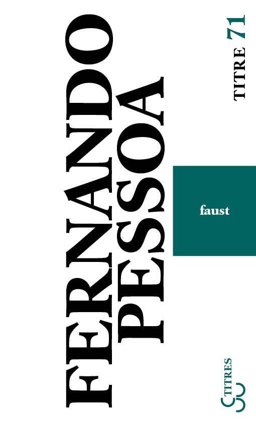
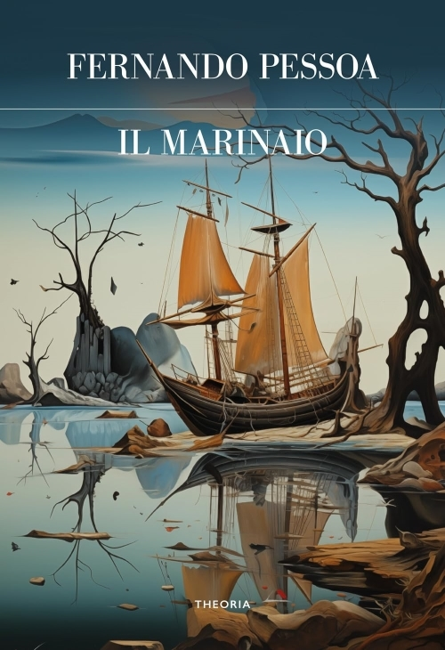
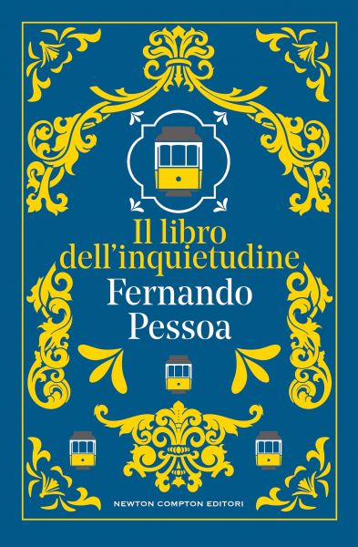
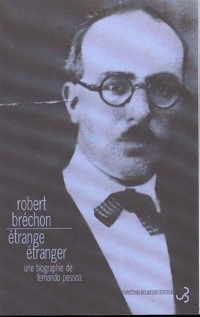
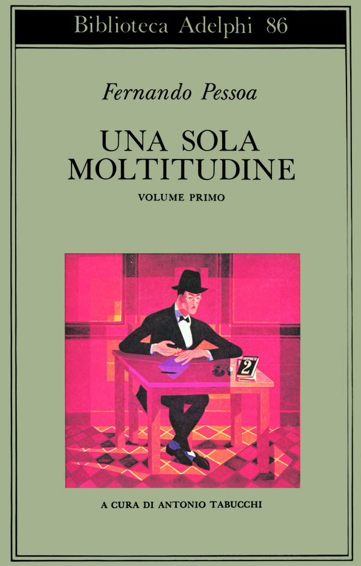
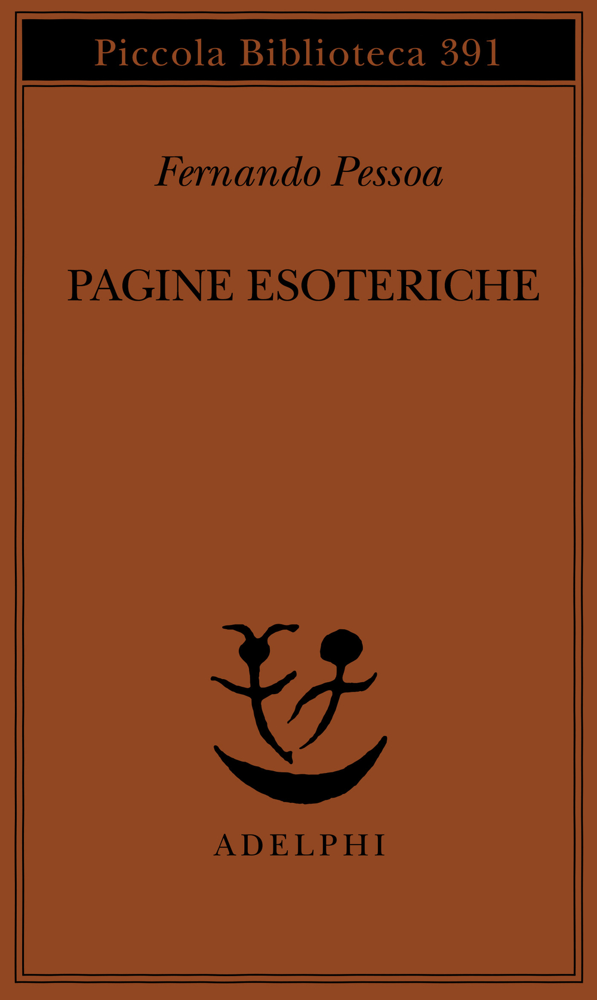
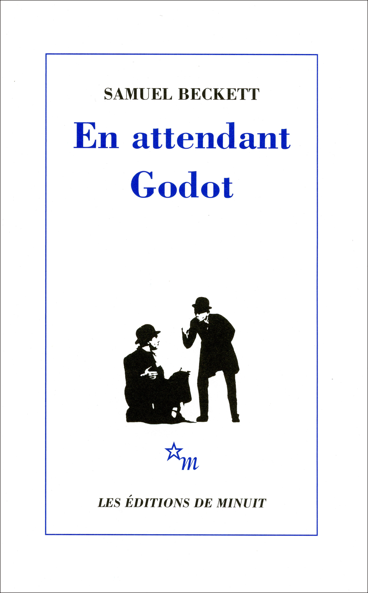
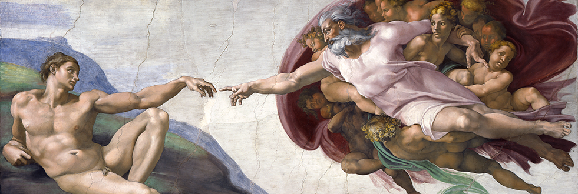
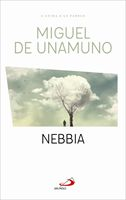

1:24:59 · 21 OPERE
Fernando Pessoa: Il marinaio ed il Faust.
Il filo del discorso
Dr Divago torna alla letteratura attraverso due testi teatrali di Fernando Pessoa, Faust e Il marinaio. Dichiara di non voler offrire un’introduzione complessiva all’autore: propone piuttosto un percorso sulla complessità dell’esperienza, sui limiti dell’intelligenza e sulla capacità della poesia di rendere nuovamente problematico ciò che sembra ovvio. Il ricordo personale dell’incontro con il Faust italiano accompagna una serie di indicazioni di lettura: Il libro dell’inquietudine, la biografia di Robert Bréchon, quella di Richard Zenith, i due volumi di Una sola moltitudine e Pagine esoteriche. Le osservazioni sulle edizioni postume insistono sul lavoro necessario per ordinare i manoscritti, sulle differenze fra raccolte e sulla perdita che il relatore associa alla mancata pubblicazione di molti testi durante la vita di Pessoa. Il giudizio sulla sua scarsa ricezione è però da precisare: la successiva fortuna internazionale non cancella la partecipazione a Orpheu nel 1915 e la pubblicazione di Mensagem nel 1934. La critica dell’industria culturale appartiene all’interpretazione di Dr Divago, non dimostra un totale silenzio sull’autore fino agli anni Ottanta. Anche la molteplicità degli eteronimi è trattata come una costruzione letteraria e filosofica, senza trasformarla in una diagnosi della persona storica. Il Faust viene affrontato a partire dal suo carattere incompiuto e dagli appunti che ne indicano il disegno. Il relatore ricorda che il personaggio precede Goethe e che il tema è stato ripreso da autori diversi, quindi concentra l’attenzione sul conflitto pessoano fra intelligenza e vita. L’intelligenza vorrebbe comprendere e delimitare l’esistenza, ma la vita eccede lo schema che dovrebbe contenerla. L’amore, la resistenza dell’esperienza e la morte sono richiamati seguendo il progetto in cinque atti: non si descrive una tragedia completata e definitivamente ordinata da Pessoa. Nella lettura proposta, il fallimento della comprensione non invita a smettere di pensare, ma a riconoscere un limite che nessuna classificazione esaurisce. Da qui Dr Divago accosta Pessoa al mondo amministrato e alla critica di Marcuse all’uomo ridotto a una dimensione. Precisa che si tratta di una relazione costruita nel discorso, non di un’influenza diretta di Pessoa su Marcuse. Amleto e i suoi cattivi sogni introducono il ritorno di ciò che una coscienza troppo sicura vorrebbe eliminare. I richiami a Freud, all’inconscio e all’inquietudine servono al relatore per criticare il conformismo moderno; non autorizzano però conclusioni cliniche sulle dipendenze, sull’uso di farmaci o sulla salute mentale di persone e gruppi. Analogamente, l’appello all’osservatore in fisica rimane un accostamento filosofico: non prova scientificamente una specifica teoria della soggettività letteraria. Il centro più ampio dell’incontro è Il marinaio, presentato come dramma statico in un quadro. La lettura si ferma su una stanza circolare, una morta nella bara, quattro candele, una finestra e tre vegliatrici. Il mare rimane lontano ma visibile. Secondo Dr Divago, la semplicità scenica intensifica la densità delle immagini e impone subito una partecipazione attiva a chi legge o ascolta. Le prime battute non fissano un’ora certa: perfino il suono che dovrebbe indicare il tempo resta dubbio. Il dramma introduce così l’incertezza senza sostituirla immediatamente con la spiegazione rassicurante di un narratore. La proposta di raccontare il passato produce altre domande: le vegliatrici sono davvero state ciò che ricordano? Parlare chiarisce oppure allontana dall’esperienza? La fiamma di una candela diventa occasione per interrogare il perché delle cose. Dr Divago legge questa esitazione come una forza filosofica e la oppone alla presunzione di possedere una descrizione definitiva del mondo. Il confronto con Il pensiero meridiano di Franco Cassano sviluppa il motivo del mare: mobilità, navigazione e trasformazione vengono contrapposte alla ricerca di stabilità. È una lettura culturale per immagini, non una legge geografica capace di classificare ogni filosofia del Nord e del Sud. La presenza del cadavere introduce il limite della vita. Il relatore collega la rimozione della morte alla distrazione descritta da Postman ed Eliot e richiama la storia cantata in Samarcanda. Il riferimento musicale richiede la distinzione fra Roberto Vecchioni, autore e interprete del brano del 1977, e Angelo Branduardi, che vi suona il violino. I passi sulla nostalgia di ciò che non si è mai visto aprono poi il discorso a Platone e Jung. Dr Divago vi riconosce un’eccedenza del soggetto rispetto a ciò che può possedere o ricordare in modo esplicito. Quando le vegliatrici osservano che senza orologi la notte cambia consistenza, il commento torna invece alla vita quotidiana e domanda quanto dei nostri gesti dipenda da una routine che non controlliamo. Il sogno non viene semplicemente identificato con l’irrealtà. Nel confronto con La vita è sogno di Calderón, Dr Divago legge Pessoa attraverso un rovesciamento: il giorno e il gesto possono interrompere la possibilità custodita dal sogno. La domanda sul torrente vicino alla casa materna diventa una domanda radicale sulla ragione per cui una cosa è proprio quella e non un’altra. I richiami a Leibniz e Heidegger restano accostamenti filosofici, senza che la spiegazione poetica annulli quella fisica o geologica. Le mani, sentite come presenza familiare e insieme misteriosa, conducono infine alla Creazione di Adamo di Michelangelo: un’affinità suggerita dal relatore, non un rapporto documentato di derivazione fra il dramma e l’affresco. La conclusione mette in relazione la parola delle vegliatrici con chi sembra guidarla dall’esterno. Dr Divago identifica la quinta persona evocata nella stanza con Pessoa e accosta il procedimento a Nebbia di Unamuno, dove il personaggio incontra il proprio autore. Questa identificazione rimane una proposta interpretativa del commentatore, non una soluzione imposta univocamente dal testo. Il frammento finale sulla schiuma e sulle molte voci riconduce all’idea che l’esperienza non possa essere ridotta a un solo significato. L’incontro termina dunque come invito a leggere Pessoa per la pluralità dei percorsi che apre, lasciando esplicitamente altri passaggi e sviluppi del dramma fuori dalla selezione commentata.
I libri nel discorso

Faust (Fausto)
Copertina: Opera incompiuta e postuma; le diverse ricomposizioni editoriali dei frammenti non equivalgono a un testo definitivo approvato dall’autore. Copertina della traduzione francese di P. Léglise-Costa e André Velter, Christian Bourgois, Titres 71, 3 gennaio 2008, 304 pagine, ISBN 9782267019568, dopo il grande formato francese 1990. La pagina presenta anche un sottotitolo incongruo relativo a Quaresma: la immagine e la descrizione del libro raffigurato recano Faust.
Immagine autentica dell’opera, controllata visivamente; l’edizione di riferimento non è attribuita al filmato.
riconoscimento_vocale_locale
Passaggio 1:03 ↗ · Fonti e libro ↗
Il marinaio (O Marinheiro)
Copertina: Composto nel 1913 e pubblicato il 24 marzo 1915 in Orpheu 1. Copertina di Il marinaio. Dramma statico in un quadro, Edizioni Theoria, Futuro anteriore, 2024, 64 pagine, ISBN 9788854983915, con un saggio introduttivo di Linda Rossi e Rosa Anna Rita Costanzo. È una edizione successiva di riferimento; non si attribuisce al relatore questa traduzione o la precedente edizione Einaudi di Antonio Tabucchi.
Immagine autentica dell’opera, controllata visivamente; l’edizione di riferimento non è attribuita al filmato.
riconoscimento_vocale_locale
Passaggio 1:08 ↗ · Fonti e libro ↗
Il libro dell’inquietudine (Livro do Desassossego)
Copertina: Opera postuma pubblicata per la prima volta nel 1982; frammenti con assetti e selezioni diversi nelle edizioni successive. Copertina corrente Newton Compton, Vintage 67, rilegato, 416 pagine, a cura di Piero Ceccucci, traduzioni di Orietta Abbati e Piero Ceccucci, ISBN 9791224208372. Il catalogo consultato non determina qui la data della ristampa. Non è la copertina della edizione Feltrinelli di Tabucchi e de Lancastre.
Immagine autentica dell’opera, controllata visivamente; l’edizione di riferimento non è attribuita al filmato.
riconoscimento_vocale_locale
Passaggio 1:37 ↗ · Fonti e libro ↗
Étrange étranger. Une biographie de Fernando Pessoa
Copertina francese 1996: Christian Bourgois, 1996, ISBN 9782267013696
Copertina autentica dell’edizione francese, fotografia di Pessoa e titolo completo leggibili. Fonte immagine dal catalogo La Rochelle/Electre; non il fallback bibliotecario. Differenze 619/624 p. fra catalogo e editore non risolte arbitrariamente.
riconoscimento_vocale_locale
Passaggio 6:16 ↗ · Fonti e libro ↗
Pessoa: A Biography
Copertina: Liveright / W. W. Norton, 2021
Copertina della biografia Pessoa di Richard Zenith. Edizione scelta come riferimento iconografico; nessuna edizione è confermata nel video. L’identificazione dell’opera nel video resta probabile.
riconoscimento_vocale_locale
Passaggio 6:34 ↗ · Fonti e libro ↗
Una sola moltitudine (volumi I–II)
Copertina del volume I della raccolta I–II: Adelphi, volume I 1979; raccolta I–II, secondo volume 1984
L’immagine è esclusivamente la copertina del volume I. Si rappresenta una sola voce per la raccolta in due volumi, senza far passare l’immagine come copertina unica di entrambi. Ritratto in copertina di Almada Negreiros dichiarato dall’editore.
riconoscimento_vocale_locale
Passaggio 7:13 ↗ · Fonti e libro ↗
Faust
Copertina: BUR / Rizzoli · 2005
Immagine autentica dell’opera, controllata visivamente; l’edizione di riferimento non è attribuita al filmato.
riconoscimento_vocale_locale
Passaggio 14:08 ↗ · Fonti e libro ↗
Frankenstein
Copertina: Rizzoli BUR Ragazzi, edizione BUR Dark, 11 ottobre 2022, 368 pagine, ISBN 9788817176699. Edizione di riferimento, non attribuita al contributo.
Copertina BUR Dark intera: fondo grigio, fulmini, castello, titolo verde Frankenstein e Mary Shelley. Non si identifica un adattamento cinematografico specifico dal solo richiamo al mito della creatura.
riconoscimento_vocale_locale
Passaggio 14:57 ↗ · Fonti e libro ↗
L’uomo a una dimensione
Identificazione probabile
Copertina: Einaudi, Piccola Biblioteca Einaudi, 1999
Copertina di un’edizione bibliografica dell’opera, con introduzione di Luciano Gallino. La citazione nel video resta probabile; questa edizione non vi è confermata.
riconoscimento_vocale_locale
Passaggio 19:28 ↗ · Fonti e libro ↗
Pagine esoteriche
Copertina Adelphi 1997: Adelphi, Piccola Biblioteca 391, 1997, a cura di Silvano Peloso, ISBN 9788845912818
Copertina arancione completa, autore e titolo leggibili. La raccolta è distinta dagli altri volumi pessoani e dai singoli frammenti non titolati.
riconoscimento_vocale_locale
Passaggio 21:56 ↗ · Fonti e libro ↗
Bibbia
Copertina: San Paolo, 2014 · Nuova Versione dai Testi Antichi · edizione di riferimento
riconoscimento_vocale_locale
Passaggio 27:46 ↗ · Fonti e libro ↗
Amleto
Copertina: BUR · 2022 · traduzione di Rocco Coronato · illustrazioni di John Austen
Immagine autentica dell’opera, controllata visivamente; non identifica l’edizione usata nel video.
riconoscimento_vocale_locale
Passaggio 30:34 ↗ · Fonti e libro ↗
Aspettando Godot (En attendant Godot)
Copertina: En attendant Godot, Les Éditions de Minuit, ISBN 9782707301482, catalogo corrente 128 pagine. Copertina intera bianca e blu con due figure; l’opera è pubblicata nel 1952, scritta nel 1948–1949 e rappresentata per la prima volta il 5 gennaio 1953. L’immagine corrente non è attribuita al primo tiraggio del 1952.
Immagine autentica dell’opera, controllata visivamente; l’edizione di riferimento non è attribuita al filmato.
riconoscimento_vocale_locale
Passaggio 42:01 ↗ · Fonti e libro ↗
Il pensiero meridiano
Copertina: Laterza, i Robinson / Letture, edizione 2021 e ristampe successive, 180 pagine, ISBN 9788858145241. Il catalogo corrente menziona IV ristampa 2025; edizione di riferimento, non attribuita al video.
Copertina autentica dal catalogo Laterza: nome Franco Cassano, titolo azzurro, cielo e mare con marchio dell’editore. File specifico individuato nell’HTML, visto integralmente e decodificato. Non è un’opera di Noll e non prova una relazione deterministica fra ogni paesaggio e una filosofia nazionale.
riconoscimento_vocale_locale
Passaggio 50:50 ↗ · Fonti e libro ↗
Divertirsi da morire. Il discorso pubblico nell’era dello spettacolo
Copertina: Luiss University Press · 2021 · prefazione di Matteo Bittanti
Immagine autentica dell’opera, controllata visivamente; non identifica l’edizione usata nel video.
riconoscimento_vocale_locale
Passaggio 56:15 ↗ · Fonti e libro ↗
Burnt Norton (Four Quartets, I)
Identificazione probabile
Raccolta: Four Quartets: Faber · Four Quartets · edizione in brossura 56 pagine · ISBN 9780571068944. Copertina dell’intera raccolta; Burnt Norton è il primo dei quattro componimenti.
Copertina autentica dell’intera raccolta Four Quartets, contenente Burnt Norton; nessuna edizione autonoma del componimento viene simulata. Immagine distribuita da IBS, dati editoriali Faber e London Review Bookshop.
riconoscimento_vocale_locale
Passaggio 56:28 ↗ · Fonti e libro ↗
Samarcanda
Copertina dell’album che contiene il brano: Canzone inclusa nell’album omonimo Philips del 1977. Immagine dell’album dal sito ufficiale dell’artista, non copertina di un libro o prova di uno specifico singolo posseduto dal relatore.
La scheda riguarda la canzone Samarcanda; l’immagine è dichiarata copertina dell’album omonimo. Non si trascrivono versi né si identifica una origine unica della leggenda senza riscontro.
riconoscimento_vocale_locale
Passaggio 56:43 ↗ · Fonti e libro ↗
La vita è sogno (La vida es sueño)
Copertina del volume con il dramma e l’auto sacramental: Adelphi · Piccola Biblioteca 252 · 1990 · a cura di Luisa Orioli
Copertina autentica del volume Adelphi che comprende il dramma La vita è sogno e l’auto sacramental omonimo. La voce riguarda il dramma; il richiamo del relatore non identifica questa edizione italiana.
riconoscimento_vocale_locale
Passaggio 1:05:11 ↗ · Fonti e libro ↗
Creazione di Adamo
Identificazione probabile
Riproduzione ufficiale dell’affresco, non copertina: Cappella Sistina, volta: Creazione di Adamo, Michelangelo; riproduzione ufficiale Musei Vaticani
Riproduzione dell’intero riquadro offerta dalla scheda ufficiale dei Musei Vaticani. È un affresco e non un libro; questa immagine non viene chiamata copertina editoriale o frontespizio.
riconoscimento_vocale_locale
Passaggio 1:10:52 ↗ · Fonti e libro ↗Vangelo secondo Matteo
Identificazione probabile
Copertina del volume completo: San Paolo, 2014 · Nuova Versione dai Testi Antichi · edizione di riferimento
Vangelo secondo Matteo è un libro della Bibbia. L’immagine mostra il volume completo San Paolo di riferimento, non un’edizione autonoma del singolo libro e non una versione identificata nella citazione.
riconoscimento_vocale_locale
Passaggio 1:13:18 ↗ · Fonti e libro ↗
Nebbia (Niebla)
Copertina San Paolo 2020, immagine ridotta: San Paolo, Le Vele, luglio 2020, ISBN 9788892219373
Copertina ufficiale 126 × 200, ridotta ma autentica, non segnaposto. Edizione Le Vele 2020 dichiarata secondo pagina editore; non fusa con diversa descrizione bibliotecaria 2019. Edizione non confermata nel video.
riconoscimento_vocale_locale
Passaggio 1:21:49 ↗ · Fonti e libro ↗